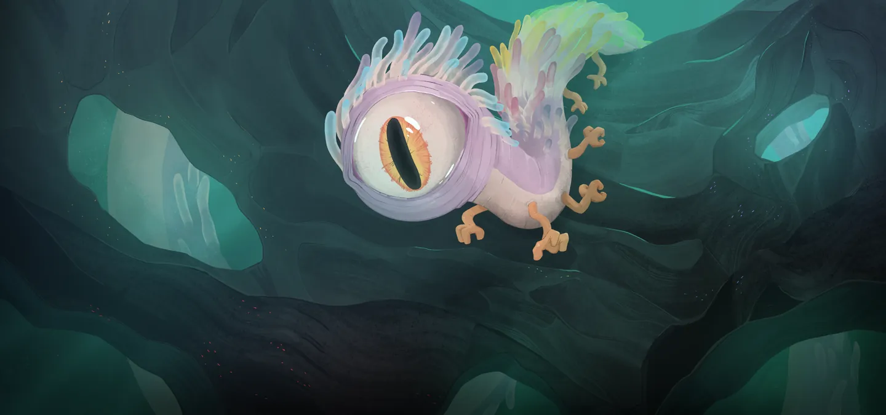
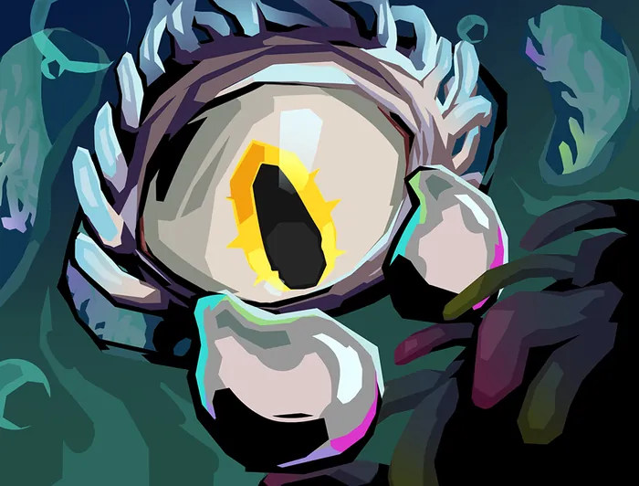

Orobas — Arc-en-ciel Vivant
Patch de Référence :
v0.111.0 Beta(Dernier patch officiel) Acte d'apparition : Acte 2 Déblocage (Epoch) :OrobasEpochThème Visuel / Couleur :#5C5F7A
🎨 Portraits & Illustrations
| Icône Ancien | Illustration Principale |
|---|---|
 |
🎮 Intégration Visuelle GBA (Butano)
- Palette suggérée pour la GBA : Teinte dominante
#5C5F7A. À mapper sur une palette 16 couleurs (15 couleurs + transparent) pour le BG de portrait. - Dimensions portrait GBA : 64x64 pixels (mode 4 bpp tilemap) positionné à
(X: 16, Y: 24)sur l'écran 240x160. - Couleur des boutons / encadrements UI :
rgba(13, 0, 26, 0.35)converti en code couleur GBA 15-bit BGR555.
📜 Rôle & Lore dans l'Ascension
🎲 Règles des Slots & Choix
- Nombre total d'options : 10 reliques disponibles.
- Structure des tirages : 3 slot(s).
- Slot #1 : 1 choix parmi 4 reliques présentées.
- Slot #2 : 1 choix parmi 4 reliques présentées.
- Slot #3 : 1 choix parmi 2 reliques présentées.
🏆 Catalogue Complet des Reliques (Classées par Tier)
⭐ Tier S (2 reliques)
 Caisse d'alchimie (
Caisse d'alchimie (ALCHEMICAL_COFFER)
- Tier :
S| Rareté :Ancient - Description : Gagnez 4 emplacements de potion avec des Potions aléatoires.
- Implémentation GBA C++ : Gestion Potion : Ajoute une potion à l'inventaire
PotionInventoryou modifie le nombre d'emplacements.
 Perle radieuse (
Perle radieuse (RADIANT_PEARL)
- Tier :
S| Rareté :Ancient - Description : Au début de chaque combat, ajoutez 1 Luminescence à votre Main.
- Implémentation GBA C++ : Mécanique de Deck : Ajoute
Éclat(LUMINESCE) au deck du joueur lors de la sélection. Nécessite l'enregistrement de l'ID de carte dansCardPool.
Cartes Dérivées / Associées :

Éclat (LUMINESCE) — Compétence (Coût :0⚡)- Effet de base : Retenue. Gagnez ⚡2⚡. Épuisement.
- Effet amélioré : Retenue. Gagnez ⚡3⚡. Épuisement.
- Amélioration :
energygain: +1
⭐ Tier A (2 reliques)
 Bois flotté (
Bois flotté (DRIFTWOOD)
- Tier :
A| Rareté :Ancient - Description : Vous disposez d'une relance gratuite pour chaque récompense de carte.
- Implémentation GBA C++ : Effet Passif : Hook standard dans
RelicManageravec écouteur d'événement (ON_COMBAT_START,ON_TURN_START, etc.).
 Dent archaïque (
Dent archaïque (ARCHAIC_TOOTH)
- Tier :
A| Rareté :Ancient - Description : Transformez une carte de base en sa version d'Ancien.
- Implémentation GBA C++ : Mécanique de Deck : Ajoute
Briser(BREAK),Répression(SUPPRESS),Protecteur(PROTECTOR),Pluie de météores(METEOR_SHOWER),Activation quadruple(QUADCAST) au deck du joueur lors de la sélection. Nécessite l'enregistrement de l'ID de carte dansCardPool.
Cartes Dérivées / Associées :
 Briser (
Briser (BREAK) — Attaque (Coût :1⚡)- Effet de base : Infligez 20 dégâts. Appliquez Vulnérable (5).
- Effet amélioré : Infligez 30 dégâts. Appliquez Vulnérable (7).
- Amélioration :
damage: +10, vulnerable: +2
 Répression (
Répression (SUPPRESS) — Attaque (Coût :0⚡)- Effet de base : Inné. Infligez 11 dégâts. Appliquez Affaibli (3).
- Effet amélioré : Inné. Infligez 17 dégâts. Appliquez Affaibli (5).
- Amélioration :
damage: +6, weak: +2
 Protecteur (
Protecteur (PROTECTOR) — Attaque (Coût :1⚡)- Effet de base : Titos inflige 10 dégâts. Inflige un montant de dégâts supplémentaires égal aux PV Max de Titos.
- Effet amélioré : Titos inflige 15 dégâts. Inflige un montant de dégâts supplémentaires égal aux PV Max de Titos.
- Amélioration :
calculationbase: +5, energy: -1
 Pluie de météores (
Pluie de météores (METEOR_SHOWER) — Attaque (Coût :0⚡)- Effet de base : Infligez 14 dégâts à TOUS les ennemis. Appliquez Affaibli (2) et Vulnérable à TOUS les ennemis.
- Effet amélioré : Infligez 21 dégâts à TOUS les ennemis. Appliquez Affaibli (2) et Vulnérable à TOUS les ennemis.
- Amélioration :
damage: +7
 Activation quadruple (
Activation quadruple (QUADCAST) — Compétence (Coût :1⚡)- Effet de base : Activez votre Orbe le plus à droite 4 fois.
- Effet amélioré : Activez votre Orbe le plus à droite 4 fois.
- Amélioration :
energy: -1
⭐ Tier B (2 reliques)
 Crevaite électrique (
Crevaite électrique (ELECTRIC_SHRYMP)
- Tier :
B| Rareté :Ancient - Description : Envoûtez une Compétence avec Imprégné.
- Implémentation GBA C++ : Effet Passif : Hook standard dans
RelicManageravec écouteur d'événement (ON_COMBAT_START,ON_TURN_START, etc.).
 Joyau prismatique (
Joyau prismatique (PRISMATIC_GEM)
- Tier :
B| Rareté :Ancient - Description : Gagnez ⚡1⚡ au début de chaque tour. Les récompenses de carte contiennent désormais des cartes d'autres couleurs.
- Choix Alternatif (Either/Or) :
Verre marin - Implémentation GBA C++ : Effet Passif : Hook standard dans
RelicManageravec écouteur d'événement (ON_COMBAT_START,ON_TURN_START, etc.).
⭐ Tier C (2 reliques)
 Œil de verre (
Œil de verre (GLASS_EYE)
- Tier :
C| Rareté :Ancient - Description : Lorsque vous obtenez cette relique, obtenez 2 cartes Communes, 2 cartes Inhabituelles, et 1 carte Rare.
- Implémentation GBA C++ : Effet Passif : Hook standard dans
RelicManageravec écouteur d'événement (ON_COMBAT_START,ON_TURN_START, etc.).
 Toucher d'Orobas (
Toucher d'Orobas (TOUCH_OF_OROBAS)
- Tier :
C| Rareté :Ancient - Description : Remplacez votre Relique de départ par une version Améliorée.
- Implémentation GBA C++ : Effet Passif : Hook standard dans
RelicManageravec écouteur d'événement (ON_COMBAT_START,ON_TURN_START, etc.).
⭐ Tier D (2 reliques)
 Verre marin (
Verre marin (SEA_GLASS)
- Tier :
D| Rareté :Ancient - Description : Consultez une sélection de 15 cartes d'un autre personnage. Ajoutez-en autant que vous souhaitez à votre Deck.
- Choix Alternatif (Either/Or) :
Joyau prismatique - Implémentation GBA C++ : Effet Passif : Hook standard dans
RelicManageravec écouteur d'événement (ON_COMBAT_START,ON_TURN_START, etc.).
 Château de sable (
Château de sable (SAND_CASTLE)
- Tier :
D| Rareté :Ancient - Description : Lorsque vous obtenez cette relique, Améliorez 6 cartes aléatoires.
- Implémentation GBA C++ : Effet Passif : Hook standard dans
RelicManageravec écouteur d'événement (ON_COMBAT_START,ON_TURN_START, etc.).
💬 Dialogues & Répliques
Les dialogues s'affichent dans la boîte de dialogue inférieure (240x40 px) sur la GBA avec défilement fluide au bouton A :
🗣️ Première Rencontre (Toutes runs confondues)
- 👑 Ancien :
Petite marionnette !! Ici ?! Prends ça, prends ça !
🗣️ Soldat de Fer (Ironclad)
-
👑 Ancien :
Un Soldat de Fer !? Comment possible ?? Peur. Très peur !!
-
👑 Ancien :
Contrat signé ? Pourquoi ?! Mauvais choix ? Oui. Grosse erreur !
-
👑 Ancien :
Te souhaite liberté !! Souhaite fort !
Vakuu méchant. Très méchant ! Architecte te libère ?
🗣️ La Silencieuse (Silent)
-
👑 Ancien :
Infection... ? FLÉAU !? Prends et va-t-en !!
-
👤 SILENT :
...
-
👑 Ancien :
Pas contagieuse ? Très mourante ? Architecte va t'aider ?
-
👑 Ancien :
Où tes sœurs ? Sœurs méchantes !!
Sois bonne personne ! Pas comme sœurs !!
🗣️ Le Défectueux (Defect)
-
👑 Ancien :
Quoi ! Serviteur assemblage ?! Encore en service !!
Pourquoi ici ? Pourquoi pas à l'usine ?? -
👑 Ancien :
Orbes brillants ! Marchent comment ?
Aïe !! -
👑 Ancien :
Cœur abîmé ? Neow utiliser assemblage cassé ?
Manipulée ? -
👤 DEFECT :
-
👑 Ancien :
Architecte réparer toi ?
🗣️ Le Régent (Regent)
-
👑 Ancien :
Voyageur ! De l'espace !? Où dans l'espace ?
Comment depuis l'espace ? Tête pointue ! Petits copains !! -
👤 REGENT :
Le Régent se lance dans un monologue qui dure plusieurs heures.
-
👑 Ancien :
Super ! Impressionnant !! Encore ! Encore !!!
-
👑 Ancien :
Encore des histoires ! Trouvé ça pour toi !
Maintenant encore des histoires !! -
👤 REGENT :
Mon plus grand fan ! Orobas, cher ami !
Heureux de te voir encore en vie ! -
👑 Ancien :
Histoires ?!
-
👤 REGENT :
Bien sûr bien sûr... mais as-tu trouvé quelques breloques pour moi ?
🗣️ La Nécrolieuse (Necrobinder)
-
👑 Ancien :
Morte ?! Pas morte ! Pourquoi marionnette ? Grosse main !!
-
👤 NECROBINDER :
Je ne suis pas une marionnette. J'ai un homme à tuer.
Que pouvez-vous faire pour moi ? -
👑 Ancien :
Tuer pas bien !! Prends ça à la place !
-
👑 Ancien :
Pas morte ! Jolis cadeaux pour toi !! Violence pas bien.
-
👑 Ancien :
Pas violence ! Collecter trucs brillants à la place... Brillants !!
-
👤 NECROBINDER :
Ma quête ne prendra fin que lorsque l'Architecte ne sera plus.
La violence est inévitable. -
👑 Ancien :
Architecte pas méchant ! Discuter ensemble ? Discuter bien !! Très bien !
🗣️ Générique (Tout Personnage)
-
👑 Ancien :
Essaie ça !!!
-
👑 Ancien :
Essaie ça !!!
⬅️ Retour au Sommaire de la Bible | ⚙️ Spécifications Techniques GBA